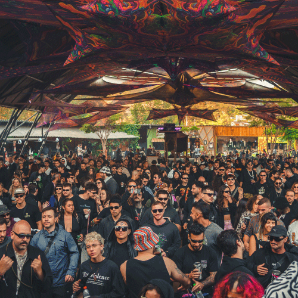

Parvati Records nace como una búsqueda artística y espiritual dentro de la cultura psytrance. Más que un sello musical, representa una filosofía basada en la conexión entre naturaleza, sonido y conciencia colectiva. Su origen se vincula con la exploración cultural y musical iniciada por Goa Gil, quien transformó la pista de baile en un espacio ritual y comunitario.
Parvati Records se construye a partir de una búsqueda artística dentro del psytrance: un sonido hipnótico, orgánico y profundo que conecta música, comunidad y naturaleza como parte de una misma experiencia.
Explorar HistoriaCómo se transforma la estética sonora y visual con el tiempo, manteniendo una identidad reconocible.
Explorar Evolución